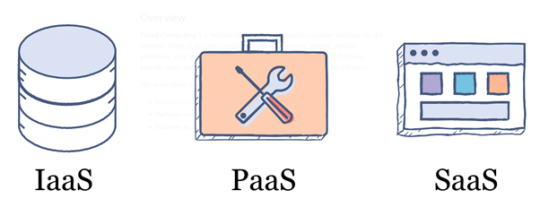
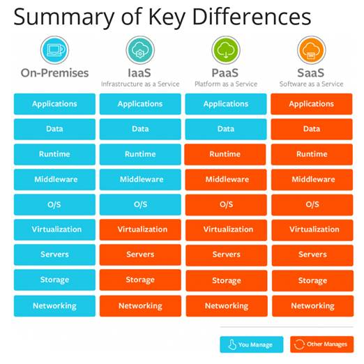

Software as a Service (SaaS)
Software that is owned, delivered and managed remotely by one or more providers. The provider delivers software based on one set of common code and data definitions that is consumed in a one-to-many model by all contracted customers at any time on a pay-for-use basis or as a subscription based on use metrics.
Examples of SaaS offerings include Microsoft Office 365, Salesforce and Workday.
Platform as a Service (PaaS)
A PaaS, usually depicted in all-cloud diagrams between the SaaS layer above it and the IaaS layer below, is a broad collection of application infrastructure (middleware) services (including application platform, integration, business process management and database services). However, the hype surrounding the PaaS concept is focused mainly on application PaaS (PaaS) as the representative of the whole category.
Examples of PaaS offerings include Microsoft Azure, IBM Cloud, Heroku, OpenShift and Pivotal Cloud Foundry.
Infrastructure as a Service (IaaS)
IaaS is a standardized, highly automated offering in which computing resources owned by a service provider, complemented by storage and networking capabilities, are offered to customers on demand. Resources are scalable and elastic in near real time and metered by use. Self-service interfaces, including an API and a graphical user interface (GUI), are exposed directly to customers. Resources may be single-tenant or multitenant, are hosted by the service provider.
Examples of IaaS offerings include Amazon Web Services, Microsoft Azure and Google Cloud Platform.
Below diagram shows the key differences on different cloud service model:
